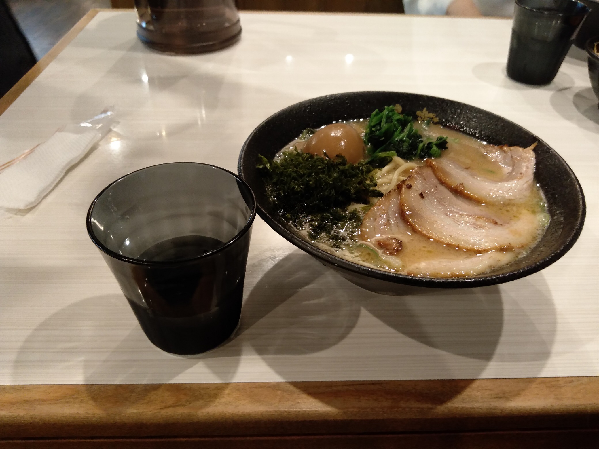
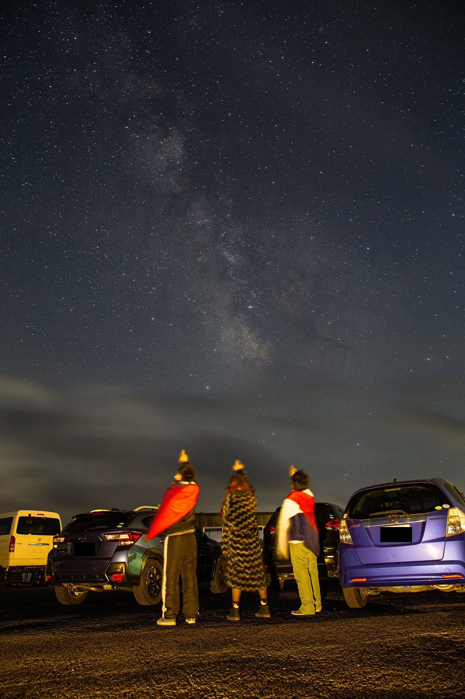
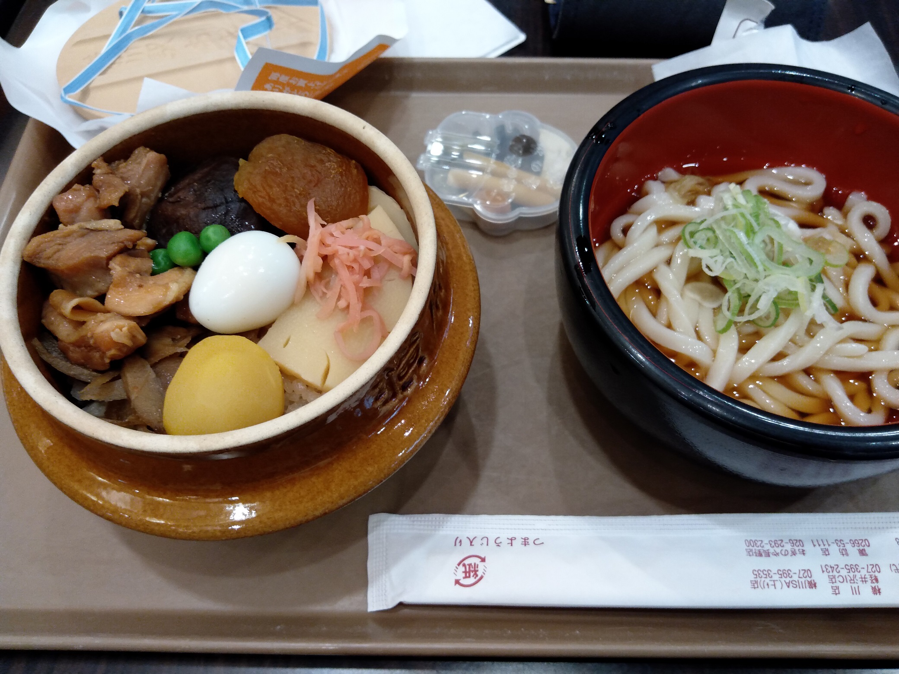
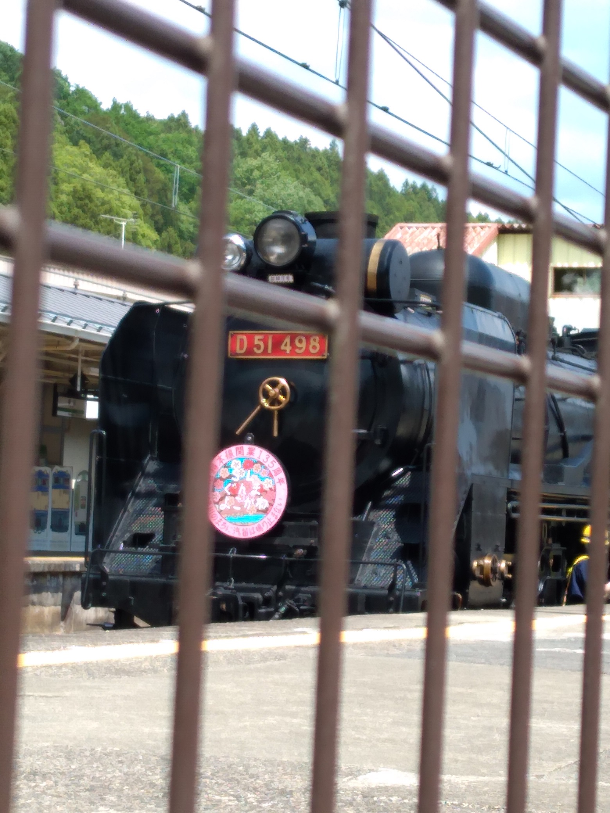
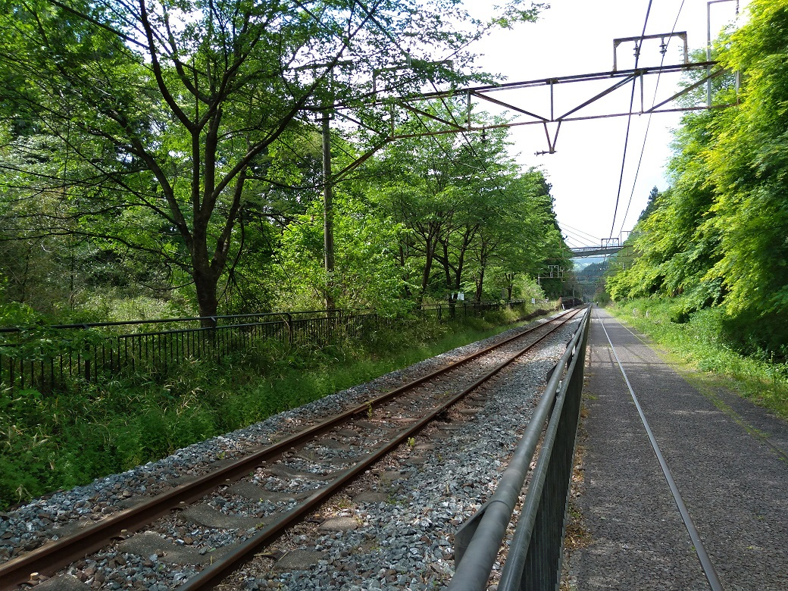
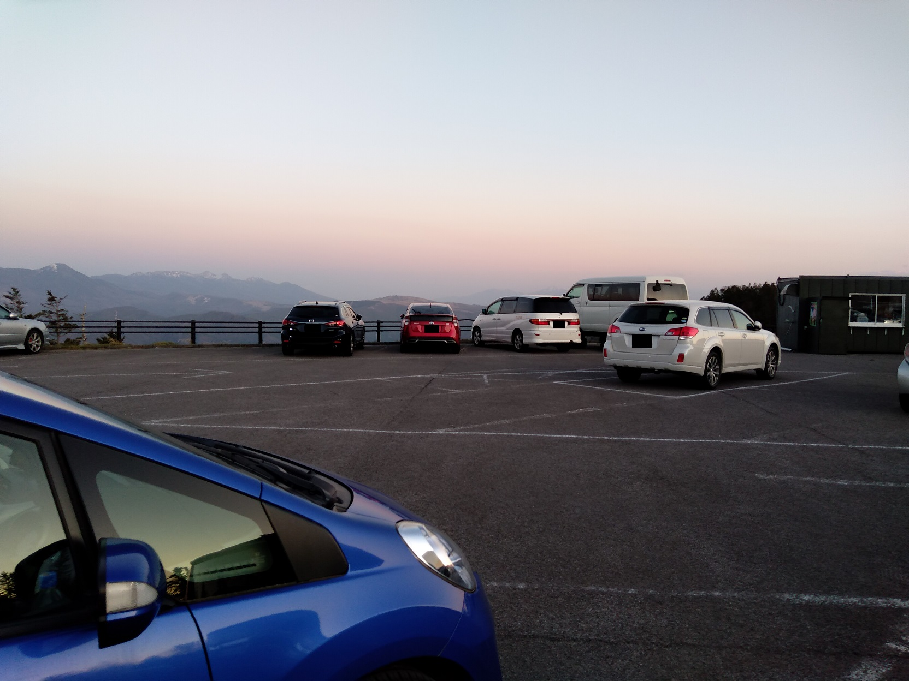
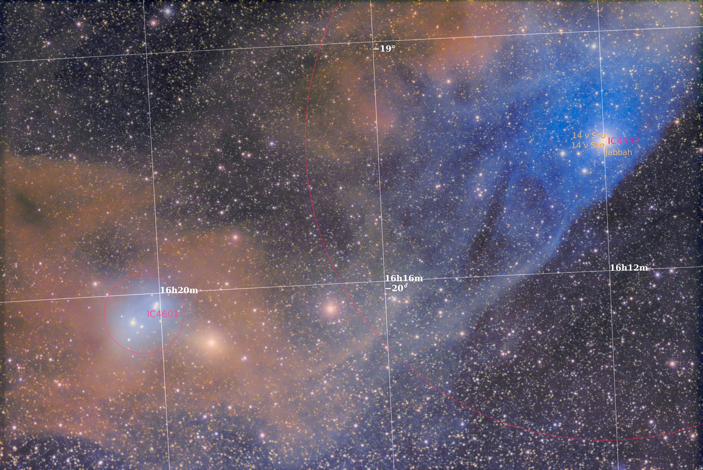
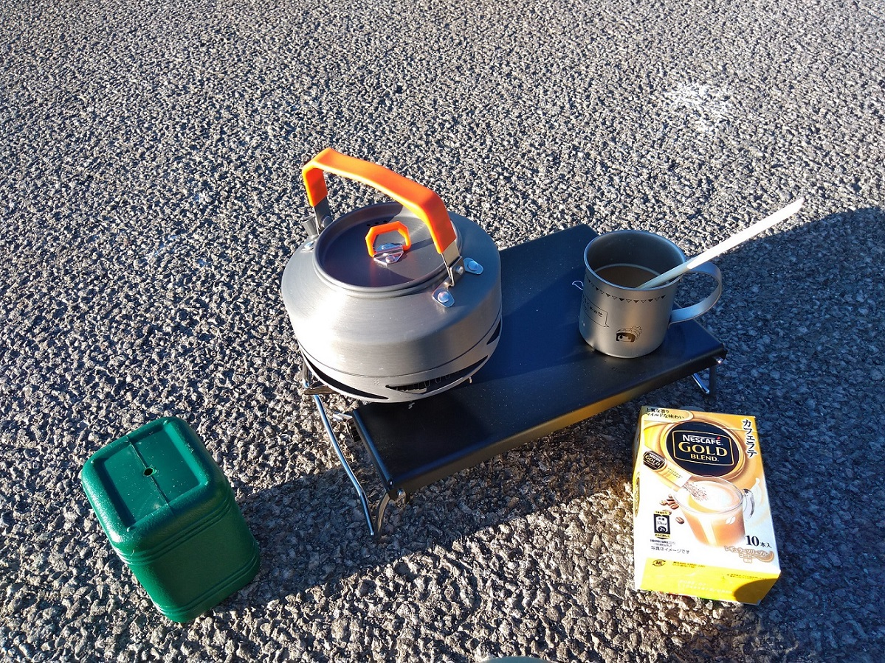
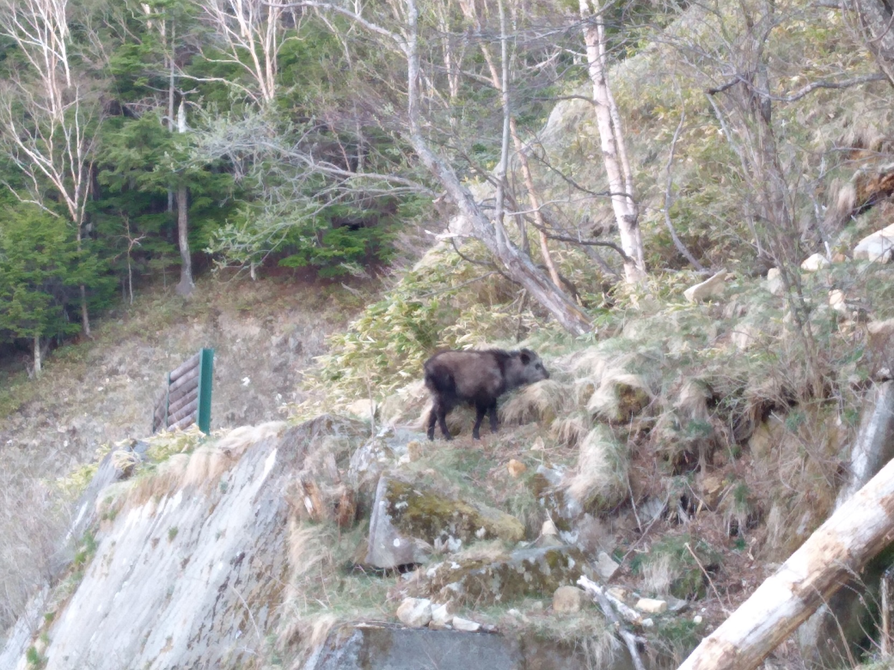
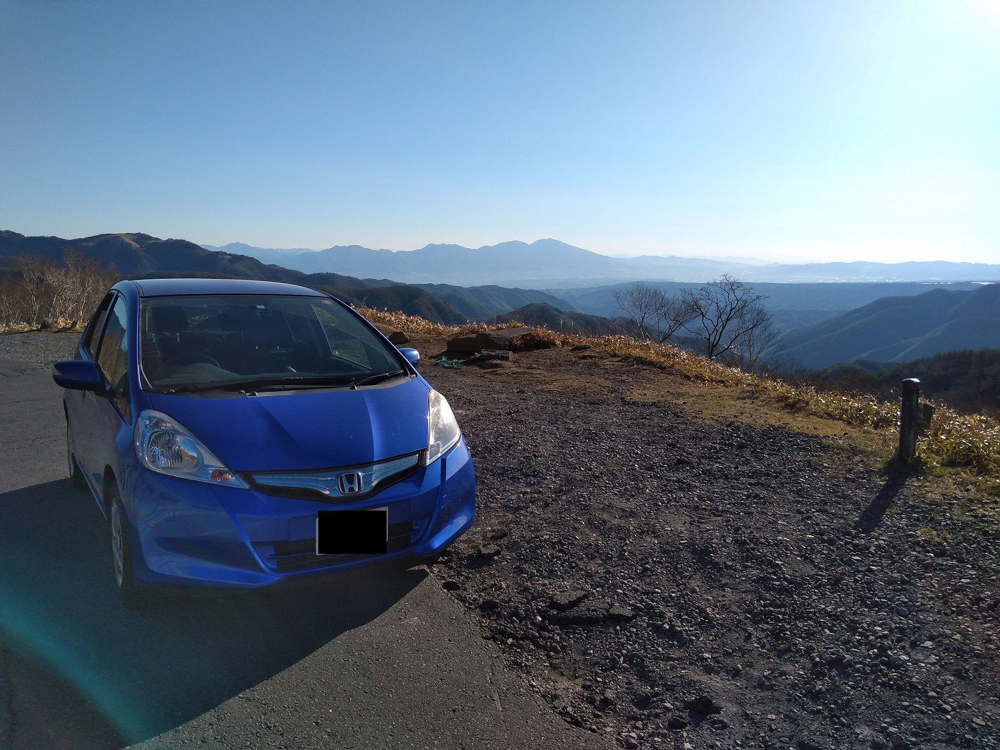

<!DOCTYPE html>
<html>

<head><meta name="generator" content="Hexo 3.8.0">
  <meta charset="utf-8">
  
    <title>
      
        【遠征記】2021年5月 美ヶ原 | 
            ほしよみ大学生のブログ
    </title>
    <meta name="viewport" content="width=device-width">
    <meta name="description" content="あいさつ前回に引き続き，5月にも美ヶ原に行ってきました．またかよと思われるかもしれませんが，他にチャンスのありそうな場所がなかったのです…（´・ω・｀）">
<meta name="keywords" content="写真,天体写真,赤道儀,遠征記">
<meta property="og:type" content="article">
<meta property="og:title" content="【遠征記】2021年5月 美ヶ原">
<meta property="og:url" content="http://dabokun.github.io/2021/06/11/00000054-2021-05-utsukushi/index.html">
<meta property="og:site_name" content="ほしよみ大学生のブログ">
<meta property="og:description" content="あいさつ前回に引き続き，5月にも美ヶ原に行ってきました．またかよと思われるかもしれませんが，他にチャンスのありそうな場所がなかったのです…（´・ω・｀）">
<meta property="og:locale" content="ja">
<meta property="og:image" content="http://dabokun.github.io/2021/06/11/00000054-2021-05-utsukushi/card.jpg">
<meta property="og:updated_time" content="2021-06-11T15:19:50.437Z">
<meta name="twitter:card" content="summary_large_image">
<meta name="twitter:title" content="【遠征記】2021年5月 美ヶ原">
<meta name="twitter:description" content="あいさつ前回に引き続き，5月にも美ヶ原に行ってきました．またかよと思われるかもしれませんが，他にチャンスのありそうな場所がなかったのです…（´・ω・｀）">
<meta name="twitter:image" content="http://dabokun.github.io/2021/06/11/00000054-2021-05-utsukushi/card.jpg">
<meta name="twitter:creator" content="@dabo_pic">
      
        <link rel="alternative" href="/atom.xml" title="ほしよみ大学生のブログ" type="application/atom+xml">
        
          
            <link rel="icon" href="/images/favicon.png">
            
              <link rel="stylesheet" href="/css/style.css">
                <!--[if lt IE 9]><script src="//html5shiv.googlecode.com/svn/trunk/html5.js"></script><![endif]-->
                
                  <script data-ad-client="ca-pub-1350688970555904" async src="https://pagead2.googlesyndication.com/pagead/js/adsbygoogle.js"></script>
</head></html>
<body>
  <div id="container">
    <div class="mobile-nav-panel">
	<i class="icon-reorder icon-large"></i>
</div>
<header id="header">
	<h1 class="blog-title">
		<a href="/">ほしよみ大学生のブログ</a>
	</h1>
	<nav class="nav">
		<ul>
			<li><a href="/">Home</a></li><li><a href="/categories">Categories</a></li><li><a href="/tags">Tags</a></li><li><a href="/archives">Archives</a></li><li><a href="/about">About</a></li><li><a href="/work">Work</a></li>
			<li><a id="nav-search-btn" class="nav-icon" title="Search"></a></li>
			<li><a href="https://github.com/dabokun"></a>
			</li>
			<li><a href="https://twitter.com/dabo_pic"></a></li>
			<li><a href="/atom.xml" id="nav-rss-link" class="nav-icon" title="RSS Feed"></a>
			</li>
		</ul>
	</nav>
	<div id="search-form-wrap">
		<form action="//google.com/search" method="get" accept-charset="UTF-8" class="search-form"><input type="search" name="q" class="search-form-input" placeholder="Search"><button type="submit" class="search-form-submit">&#xF002;</button><input type="hidden" name="sitesearch" value="http://dabokun.github.io"></form>
	</div>
</header>
    <div id="main">
      <article id="post-00000054-2021-05-utsukushi" class="post">
	<footer class="entry-meta-header">
		<span class="meta-elements date">
			<a href="/2021/06/11/00000054-2021-05-utsukushi/" class="article-date">
  <time datetime="2021-06-11T11:53:00.000Z" itemprop="datePublished">2021-06-11</time>
</a>
		</span>
		<span class="meta-elements author">astr0dab0</span>
		<div class="commentscount">
			
			<a href="http://dabokun.github.io/2021/06/11/00000054-2021-05-utsukushi/#disqus_thread" class="article-comment-link">Comments</a>
			
		</div>
	</footer>
	
	<header class="entry-header">
		
  
    <h1 class="article-title entry-title" itemprop="name">
      【遠征記】2021年5月 美ヶ原
    </h1>
  

	</header>
	<div class="entry-content">
		
		
		<div id="toc" class="toc-article">
			<p class="toc-title">目次</p>
			<ol class="toc"><li class="toc-item toc-level-3"><a class="toc-link" href="#あいさつ"><span class="toc-number">1.</span> <span class="toc-text">あいさつ</span></a></li><li class="toc-item toc-level-3"><a class="toc-link" href="#一晩目"><span class="toc-number">2.</span> <span class="toc-text">一晩目</span></a></li><li class="toc-item toc-level-3"><a class="toc-link" href="#二晩目"><span class="toc-number">3.</span> <span class="toc-text">二晩目</span></a></li></ol>
		</div>
		
		<h3 id="あいさつ"><a href="#あいさつ" class="headerlink" title="あいさつ"></a>あいさつ</h3><p>前回に引き続き，5月にも美ヶ原に行ってきました．<br>またかよと思われるかもしれませんが，他にチャンスのありそうな場所がなかったのです…（´・ω・｀）</p>
<a id="more"></a>
<h3 id="一晩目"><a href="#一晩目" class="headerlink" title="一晩目"></a>一晩目</h3><p>以前から一緒に星見に行こう行こうと話していた坂本真綾ファン2名をどうしても連れて行きたかったので，一晩目は土日に設定．<br>といっても前回同様天気予報は微妙…　夜半すぎから晴れるかも，という予報であった分前回のほうがマシという有様でしたが，これを逃したら月齢的に厳しいし，次月の6月は梅雨入り，次はないぞと思ったので強行することに．<br>連れていく人のうち一人は東京在住だったので八王子まで出てきてもらって拾いましたが，もう一人は群馬在住ということで，久々に関越道を使って北側から攻めることにします．こちらを通って美ヶ原に行くのは初めてのことです．<br>行こうとしていた佐久の蕎麦屋がウイルスの影響か閉まっていたので別の店を探して家系ラーメンを食べ，4月にも来た麓のコンビニで少し買い出しをしてから山道を登り，途中立派なカモシカの歓迎を受けつつ21時頃に美ヶ原に到着．<br><br>案の定の曇り，というか風，強い．</p>
<p>現地では観測地開拓に<a href="https://twitter.com/656nm_freak" target="_blank" rel="noopener">M&amp;Mさん</a>もいらしており，少しだけお話できました．<br>やることもないので行ったことがない美術館の方に足を運んでみましたが，こちらのほうが開けている分，上田市や小諸市の方へ吹き下ろす風がさらに強く，車のドアを開けた瞬間風でドアがもげるかというレベルで勢いよく開くなど…．M&amp;Mさんも来ていましたが美術館の周りを歩いているときに彼の車の防風警報(？)が鳴るという始末（台風のときですら鳴ったことがなかったらしい…）．彫刻などがある場所にも立ち入れなさそうだったので，こりゃダメだと思いふるさと館のいつもの駐車場に戻りました．<br>チラチラと現れる晴れ間に一瞬星が見えることもありましたが，基本的にずっと曇りっぱなしで本当にやることもなくなったので，古のオタクトーク(？)をしながら仮眠をとったりしていたところ，ちょうど薄明が始まった頃，3時過ぎになんと天の川が見えるくらいには晴れてきました．<br>風も強く，雲も高速で流れていくような環境下で体力的に満身創痍な我々でしたが，なんとか記念写真を撮影したので，愚民天文部の5月の活動記録として報告しておきます（たぶん真綾ファンにしか伝わらない）．</p>
<p></p>
<p>その後8時くらいまで仮眠し，軽井沢→横川鉄道博物館あたりを巡って富岡あたりまで帰還．途中温泉に寄って釜飯を食べました．この辺りが自分は一番眠かった()．<br><br>横川駅にいたデゴイチというやつ．鉄道にはあまり興味がないのですが，初めてSLの汽笛の音を聞けた気がする．<br>とうげの湯駅？まで伸びているっぽい路線です．LiSAの「炎」のジャケットはここで撮影されたらしいです．</p>
<p>本当は快晴予報の日月に連れて行きたかったのですが，社会人を連れていくわけにもいかず…ちゃんとした晴れの夜はまた梅雨明けに，ということでとある神社で二人とは分かれました．</p>
<h3 id="二晩目"><a href="#二晩目" class="headerlink" title="二晩目"></a>二晩目</h3><p>自分はというと富岡でガソリンを補充し再度美ヶ原へ．風も昨晩よりは弱いだろうということで夕飯も現地で湯を沸かしてとることに．<br>現地に到着したのは日の入り前だったので，のんびり設営．ファインダー合わせだけして少し休憩．<br><br>日が暮れても撮りたい対象が登ってくるまで極軸合わせたりはしつつものんびり動いていました．この日はふる里館も営業しており，天気も良かったので，宿の方が解説しているところをこっそり覗いたりしていました．<br>撮影したのは前回撮れなかった青い馬頭です．カメラも問題なく繋がり，ガイドもしっかり機能してくれました．<br>ノーフィルター，片ボケがあったりと粗はありますが，とりあえずそれなりのが撮れたので満足です．</p>
<p></p>
<div style="text-align: center;">
「青い馬頭星雲～ちょいクローズアップ～」<br>
2021年5月9日 23時18分～ 長野県 美ヶ原にて<br>
FSQ-85EDP + フラットナー1.01X F5.4<br>
QHY268C<br>
Gain 26/Offset 25/-15℃/360s*32=192min<br>
タカハシ EM-11 Temma2 Jr. + MGEN-3<br>
ステライメージ8 / Adobe Lightroom CC / Photoshop CC / PixInsight<br><br>
</div>

<p>そうそう，処理にはPixInsightも使ってみました．蒼月城さんやM&amp;Mさんの動画である程度流れはつかめましたが，まだまだ勉強することが多そうです．特に後処理でマスクとか使ったりする部分…．<br>ついでに撮っていたタイムラプスも置いておきます．冷却 CMOS に直焦撮影を任せるとこのように撮影風景が撮れるのがおトクです．</p>
<video src="timelaps.mp4" width="720" height="720" controls></video>

<p>この晴れがなぜ昨晩に来なかったのか…とも思いますが後悔しても仕方ありません，星空は逃げない（´・ω・｀）<br>翌朝もきれいに晴れ，カフェラテをキメて諏訪で1時間ほど仮眠をとり，まっすぐ帰りました．<br>霧ヶ峰や八ヶ岳などの山々の向こうに顔を覗かせる富士山もバッチリ．</p>
<p><br>カモシカ，なぜかこの遠征では普通の鹿を一匹も見てないのにカモシカは三回も見ました．どうなってるんだ…．</p>
<p>久々にビーナスラインも走れて気持ちよかった．</p>
<p>また秋くらいに来たいな，美ヶ原．<br>それでは．</p>

		
	</div>
	<footer class="article-footer">
		<a href="https://twitter.com/intent/tweet?text=%E3%80%90%E9%81%A0%E5%BE%81%E8%A8%98%E3%80%912021%E5%B9%B45%E6%9C%88%20%E7%BE%8E%E3%83%B6%E5%8E%9F｜%E3%81%BB%E3%81%97%E3%82%88%E3%81%BF%E5%A4%A7%E5%AD%A6%E7%94%9F%E3%81%AE%E3%83%96%E3%83%AD%E3%82%B0&url=http://dabokun.github.io/2021/06/11/00000054-2021-05-utsukushi/" class="twitter-share-button" target="_blank" title="Twitter"></a>
		<script async src="https://platform.twitter.com/widgets.js" charset="utf-8"></script>

		<div id="fb-root"></div>
		<script async defer crossorigin="anonymous" src="https://connect.facebook.net/ja_JP/sdk.js#xfbml=1&version=v4.0"></script>
		<div class="fb-share-button" data-href="http://dabokun.github.io/2021/06/11/00000054-2021-05-utsukushi/" data-layout="button_count" data-size="small"><a target="_blank" href="https://www.facebook.com/sharer/sharer.php?u=https%3A%2F%2Fdabokun.github.io%2F&amp;src=sdkpreparse" class="fb-xfbml-parse-ignore">シェア</a></div>
	</footer>
	<footer class="entry-footer">
		<div class="entry-meta-footer">
			<span class="category">
				
  <div class="article-category">
    <a class="article-category-link" href="/categories/expedition/">遠征記</a>
  </div>

			</span>
			<span class=" tags">
				
  <ul class="article-tag-list"><li class="article-tag-list-item"><a class="article-tag-list-link" href="/tags/photography/">写真</a></li><li class="article-tag-list-item"><a class="article-tag-list-link" href="/tags/astrophotography/">天体写真</a></li><li class="article-tag-list-item"><a class="article-tag-list-link" href="/tags/mount/">赤道儀</a></li><li class="article-tag-list-item"><a class="article-tag-list-link" href="/tags/expedition/">遠征記</a></li></ul>

			</span>
		</div>
	</footer>
	
	
<nav id="article-nav">
  
    <a href="/2021/06/11/00000055-2021-06-amagi/" id="article-nav-newer" class="article-nav-link-wrap">
      <strong class="article-nav-caption">Newer</strong>
      <div class="article-nav-title">
        
          【遠征記】2021年6月 天城（L-eXtreme デビュー）
        
      </div>
    </a>
  
  
    <a href="/2021/06/07/00000053-2021-04-utsukushi/" id="article-nav-older" class="article-nav-link-wrap">
      <strong class="article-nav-caption">Older</strong>
      <div class="article-nav-title">
        
          【遠征記】2021年4月 美ヶ原
        
      </div>
    </a>
  
</nav>

	
</article>


<section id="comments">
	<div id="disqus_thread">
		<noscript>Please enable JavaScript to view the <a href="//disqus.com/?ref_noscript">comments powered by
				Disqus.</a></noscript>
	</div>
</section>

    </div>
    <div class="mb-search">
  <form action="//google.com/search" method="get" accept-charset="utf-8">
    <input type="search" name="q" results="0" placeholder="Search">
    <input type="hidden" name="q" value="site:dabokun.github.io">
  </form>
</div>
<footer id="footer">
	<h1 class="footer-blog-title">
		<a href="/">ほしよみ大学生のブログ</a>
	</h1>
	<span class="copyright">
		&copy; 2022 astr0dab0<br>
		Modify from <a href="http://sanographix.github.io/tumblr/apollo/" target="_blank">Apollo</a> theme, designed by <a href="http://www.sanographix.net/" target="_blank">SANOGRAPHIX.NET</a><br>
		Powered by <a href="http://hexo.io/" target="_blank">Hexo</a>
	</span>
</footer>
    
<script>
  var disqus_shortname = 'astr0dab0';
  
  var disqus_url = 'http://dabokun.github.io/2021/06/11/00000054-2021-05-utsukushi/';
  
  (function(){
    var dsq = document.createElement('script');
    dsq.type = 'text/javascript';
    dsq.async = true;
    dsq.src = '//go.disqus.com/embed.js';
    (document.getElementsByTagName('head')[0] || document.getElementsByTagName('body')[0]).appendChild(dsq);
  })();
</script>


<script src="//ajax.googleapis.com/ajax/libs/jquery/2.0.3/jquery.min.js"></script>


<link rel="stylesheet" href="/fancybox/jquery.fancybox.css" media="screen" type="text/css">
<script src="/fancybox/jquery.fancybox.pack.js"></script>


<script src="/js/script.js"></script>
  </div>
</body>
</html>